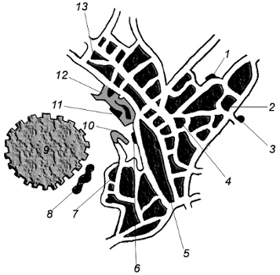

1. Ali Paşa Konağı
2. Sarı Konak
3. Balıklı Hamamı
4. Saadettin Camii
5. Sümbüll Medresesi
6. Külliye
7. Muntazar’ın ilk evi
8. Halid Bey’in define aradığı yer
9. Hisar Kalesi
10 Sırlıbayırı
11.Bedesten
12. Samanpazarı
13. Tellak Hamdi’nin evi